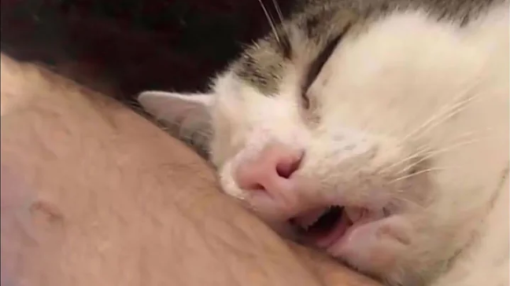

First Post
2021-10-24
Welcome to my first blog post. I made this website in pursuit of improving my general skills as a programmer, engineer, typist, etc. Blogs also allow me to document and share my thoughts and experiences with the world, and maybe this will lead to greater things in the future.
One of the things I'd like to share is something that I learned that week. This week, I learned how to use Jekyll, which is a ruby static website generator. To be quite honest, I'm still quite iffy with HTML, CSS, and really everything surrounding web design, but I'm getting there.
Oh, and one other thing I learned is how to insert images in markdown. Here's a picture of a cat:
